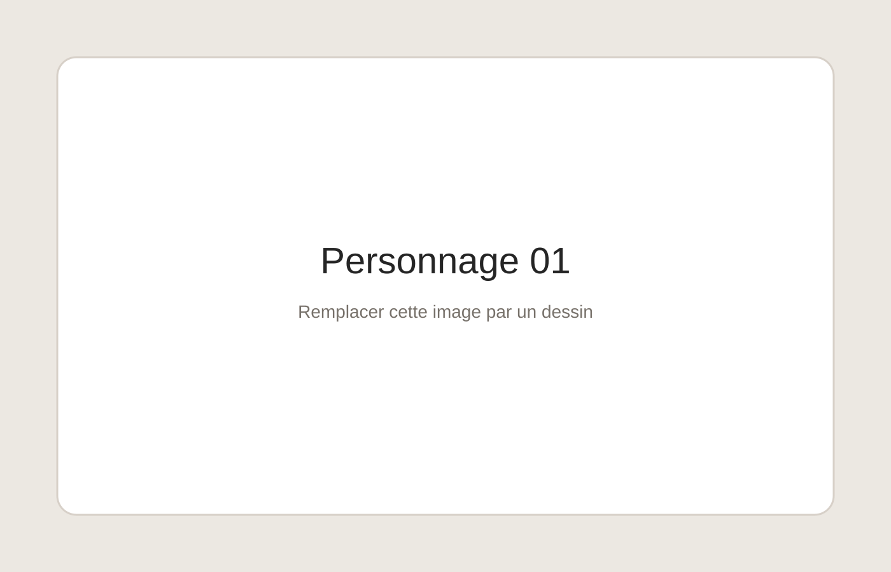
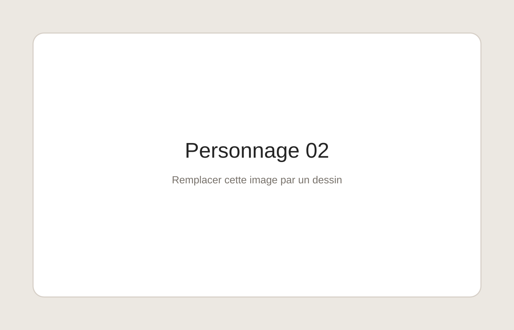
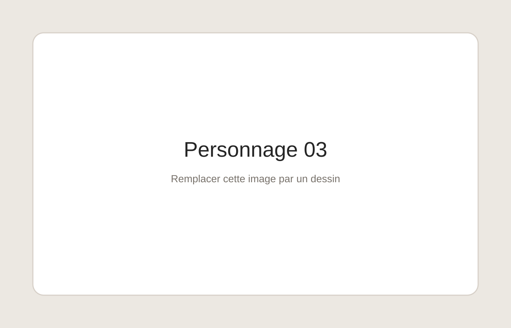
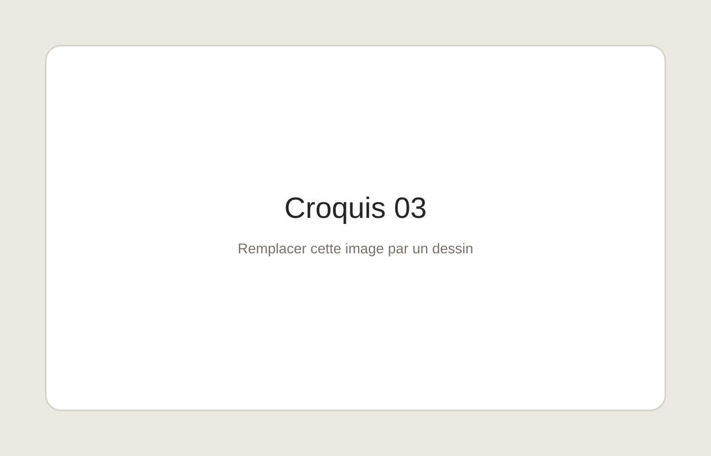
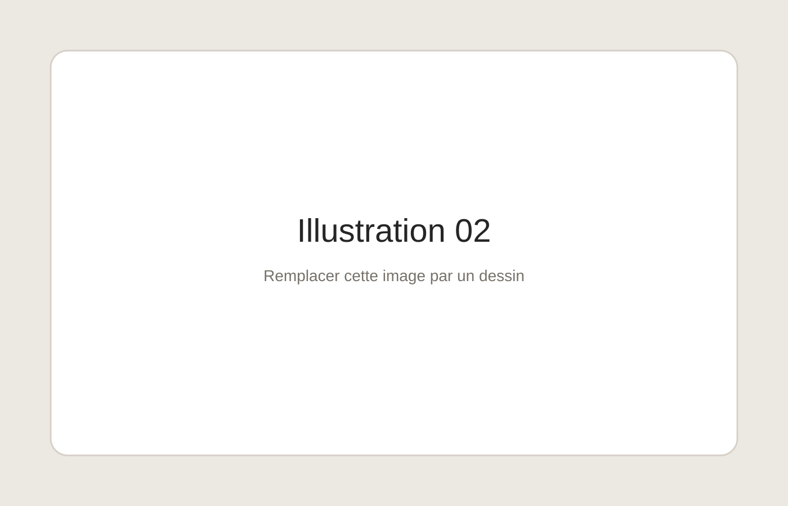

Présentation
À propos
Je suis élève de troisième et je m'intéresse particulièrement au dessin et à l'illustration. Ce portfolio présente une sélection de mes travaux, de mes recherches et de mes créations personnelles.
Galerie 01
Personnages
Recherches de personnages, expressions, poses et illustrations.



Galerie 02
Croquis & recherches
Études, esquisses, essais de composition et travaux préparatoires.

Galerie 03
Illustrations
Travaux terminés et compositions personnelles.

Projet
Stage d'observation
Ce portfolio accompagne une recherche de stage d'observation de troisième dans le domaine de l'illustration et de la création graphique.